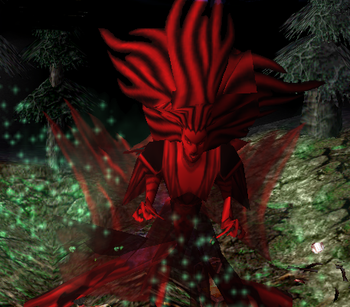

Use your R only after she used lifestealing spell, to not heal her accidentially.
Always play on range and hold your F to counter her awakening skill, silence will make her *forget* to use it and give you more time to spare.
Save your W to counter Blood Soldiers, if you were in place that she spawned them at, you would get slowed, so use W to clean yourself.